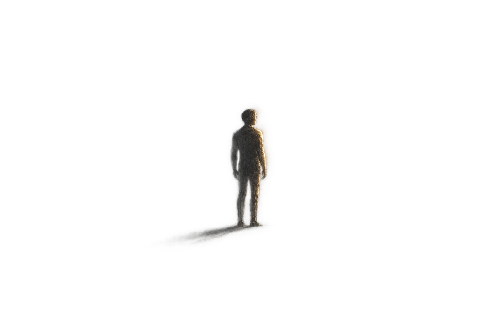

01 / Манифест
Я верю, что свет способен менять не только пространство, но и человека внутри него.
Для меня светодизайн — это работа с восприятием.
Текст закреплён. Двигать можно луч и два варианта человека.
На сайт
Для меня светодизайн — это работа с восприятием.